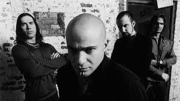

Disturbed
Banda de heavy metal formada en Chicago (Illinois) en 1994

Integrantes del grupo
David Draiman
Dan Donegan
John Moyer
Mike Wengren
Discografía
Tablas
Grandes éxitos de Disturbed
Año
Disco
2000
The Sickness
2002
Believe
2005
Ten Thousand Fists
"Believe" fue el álbum más exitoso
SITIO WEB OFICIAL
www.disturbed1.com